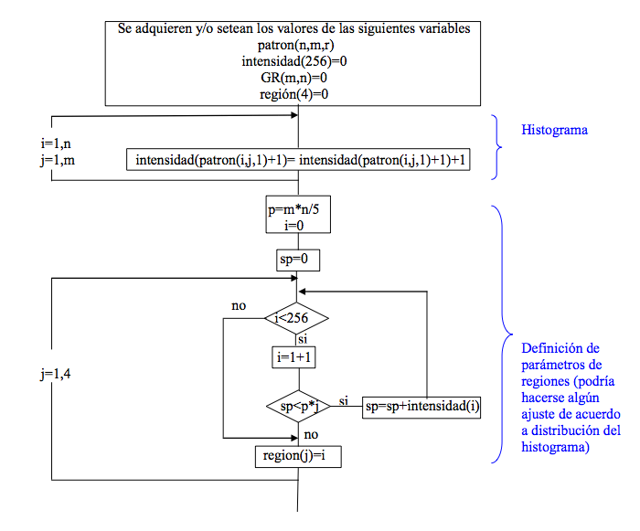
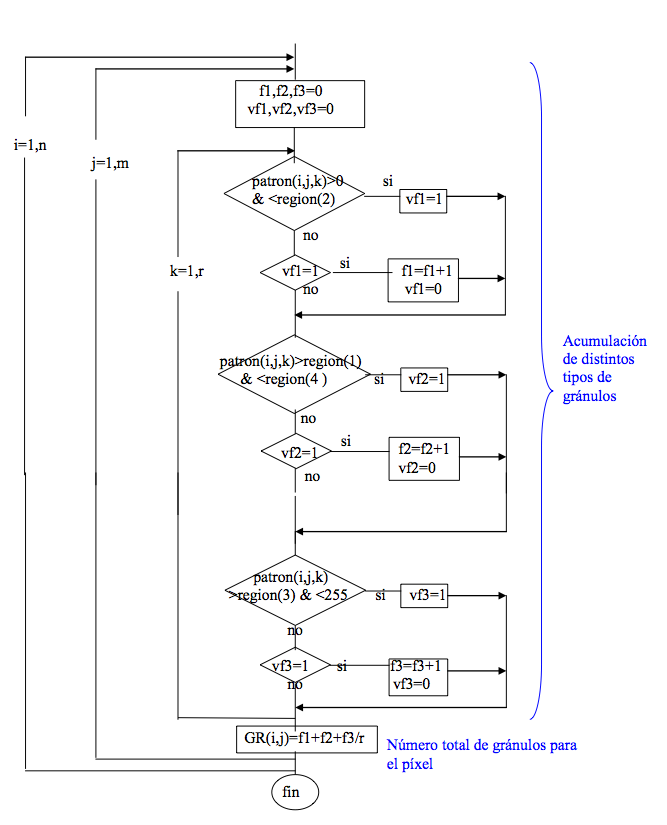

Un Sistema Digital para Procesar Señales Speckle en Tiempo Real
F. Ferrara - E. Cozzolino - E. Todorovich - M. Vázquez
G. Bioul - A. Dai Pra - I. Passoni
Contenido
- Introducción
- Marco Teórico
- Algoritmos
- Circuitos Digitales
- Experimentos
- Conclusiones
Introducción
Speckle
Fenómeno óptico que se produce cuando una luz láser reflejada desde una superficie iluminada se muestra como un patrón granular de alto contraste.

Speckle
Cuando hay algún tipo de actividad en la superficie, el patrón de speckle varia en el tiempo produciendo un fenómeno físico llamado "de ebullición" donde los speckles desaparecen y aparecen sin ningún desplazamiento significativo. La actividad esta dada por el cambio de las propiedades de la muestra.
Speckle
Este comportamiento puede darse en fenómenos como:
- Viabilidad de semillas
- Actividad bacteriana
- Golpes en frutas
- Secado de pintura
- Corrosión
Secuencia de imágenes
Capturadas por la cámara y procesadas por una computadora de propósito general para caracterizar los fenómenos, utilizando descriptores que analizan el comportamiento de cada pixel.

Fuzzy Granular Descriptor (FGD)
- Mayor eficacia
- Menor complejidad computacional
Rough Fuzzy Granular Descriptor (RFGD)
- Conceptos de teoría de Conjuntos Aproximados
- Conceptos de teoría de Conjuntos Difusos
- Pensado para operar en tiempo real
- Pensado para sistemas digitales
Marco Teórico
Actividad de la imagen
Variaciones de intensidad de cada pixel dentro de una secuencia de imágenes en un intervalo dado de tiempo.
Se da cuando hay cambios significativos en la intensidad de las señales. La noción de variación de intensidad significativa es difícil de definir. Depende de la aplicación y puede ser subjetiva e incierta.
THSP
La variación de la intensidad de cada pixel a través de la secuencia de imágenes capturadas a intervalos de tiempo fijos determina una señal unidimensional llamada "Historia en el Tiempo del Patrón Speckle".

Definición de intervalos

Cálculo de densidad de gránulos de una señal arbitraria
Algoritmos
Diagrama de Flujo
Diagrama de Flujo
Circuitos Digitales
Calculo Indice de Actividad
Calculo Indice de Actividad
- 4 Módulos Principales
- Calc_Hist
- Calc_Regions
- Calc_Granules
- Divider
- 3 Memorias Principales
- Mem_Hist
- Mem_Count
- Mem_Flags
Calculo Indice de Actividad
- Señales de Entrada
- start
- pxIn
- pxInAddr
- frIn
- Señales de Salida
- Q
- pxOutAddr
- frOut
Calculo del Histograma
- Se analiza el primer frame capturado
- Se almacenan los 256 registros binarios en MEM_HIST
- La memoria MEM_HIST se direcciona por la intensidad del pixel [0, 255]
- El numero de pixeles en esta dirección se incrementa en uno
- En el siguiente ciclo se escribe el resultado en el mismo registro
- Se trabaja de manera segmentada siendo MEM_HIST de doble puerto
Calculo de los Limites de las Regiones
Calculo de los Limites de las Regiones
Los siguientes pasos se repiten 2Z-2 veces, siendo Z la cantidad de zonas (3).
- Se accede secuencialmente a MEM_HIST
- Se acumula los valores de registros binarios en el registro AccData hasta que supera Nm
- La dirección actual se guarda en el registro Region correspondiente.
Calculo de Gránulos

Calculo de Gránulos
- El código de zona, de la imagen anterior, del pixel que entra se lee de MEM_FLAGS
- Se compara el código de zona anterior con el actual
- Si la intensidad cambia a una nueva zona, en el siguiente ciclo de reloj
- Se aumenta el contador del granulo correspondiente en MEM_COUNT
- Se actualiza el código actual de zona en MEM_FLAGS
Independientemente de que haya o no cambio de zona, se continua leyendo los pixeles con normalidad ya que las memorias son de doble puerto
Calculo de División
Se utiliza el algoritmo de división por restauración en punto fijo y se adapta para calcular el AIij por cada pixel en cada nuevo frame.
El circuito trabaja en pipeline para poder comenzar el calculo de un nuevo cociente en cada nuevo ciclo de reloj.
No se aplica normalización a los operandos, por lo que algunos ceros iniciales se podrían obtener para los cocientes.
Calculo de División
- El indice de actividad se encuentra en [0, 2]
- Con p bits de precisión fraccionaria, se puede utilizar un formato XX.X___X
- Se genera un cociente exacto de la forma X.X___X para los resultados menores a 2
- Se aproxima el cociente a 1.1___1 cuando el cociente es exactamente 2
- La latencia del divisor es de p + 2 ciclos de reloj
- La latencia del calculo de gránulos es de 2 ciclos de reloj
- La latencia del indice de actividad es p + 4 ciclos de reloj
Experimentos
| # Pixeles | # Frames | ||
| Indicadores | 64 | 128 | |
| 128 x 128 | tp (ns) | 4.02 | 4.04 |
| tp,opt (ns) | 3.48 | 3.48 | |
| #ff | 311 | 331 | |
| #LUT | 377 | 398 | |
| #RAMB | 4 + 3 | 5 + 2 | |
| 256 x 256 | tp (ns) | 4.86 | 4.87 |
| tp,opt (ns) | 3.52 | 3.52 | |
| #ff | 319 | 334 | |
| #LUT | 397 | 416 | |
| #RAMB | 20 + 1 | 22 + 1 | |
| 512 x 512 | tp (ns) | 5.42 | 5.43 |
| tp,opt (ns) | 3.52 | 3.52 | |
| #ff | 329 | 349 | |
| #LUT | 404 | 423 | |
| #RAMB | 80 + 1 | 88 + 1 | |
| # Pixeles | # Frames | ||
| Indicadores | 64 | 128 | |
| 128 x 128 | Power (W) | 1.129 | 1.131 |
| Energía por pixel (nJ) | 4.516 | 4.524 | |
| 256 x 256 | Power (W) | 1.085 | 1.089 |
| Energía por pixel (nJ) | 4.34 | 4.356 | |
| 512 x 512 | Power (W) | 1.113 | 1.117 |
| Energía por pixel (nJ) | 4.452 | 4.468 | |
- FPGA Virtex-6 de Xilinx (xc6vlx130t ff484 -3)
- RAMB36E1 + RAMB18E1
- El análisis de potencia y energía solo incluye el core
- La frecuencia del circuito es de 250 MHz (periodo de 4 ns) para la estimación
- Mayor número de pixeles -> Mayor consumo área / Mayor consumo memoria embebida
- Mayor número de frames -> Mayor consumo área
- El análisis del camino critico permite un compromiso entre el periodo de reloj y la latencia
- Latencia de 12 ciclos de reloj para 8 bits de precisión
- 1000 fps para frames de 512 x 512
Conclusiones
- El descriptor FGD fue reformulado como RFGD para un circuito digital
- Circuito compuesto por
- 1 sumador
- 6 comparadores
- 1 nivel de logica adicional
- 9 restadores
- 9 multiplexores
- Diseñado mediante una descripción portable en VHDL
- Realiza el calculo de granulos en tiempo real de señales THSP
- Los mejores resultados son obtenidos si la memoria es implementada en el mismo chip